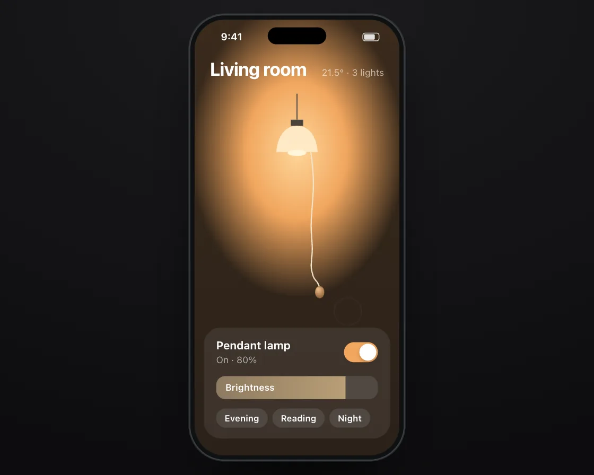

Verlet rope
Verlet rope is a DOM effect: points remember where they were; lengths are enforced. One plain JavaScript file with no dependencies; add it with npx motion-library add verlet-rope.

Open it live, tune it and copy the code
What is Verlet rope?
A lamp’s pull cord swings and whips; a tug switches the light on or off.
How does Verlet rope work?
Verlet integration moves each point by its last motion plus gravity, then a few constraint passes per frame restore neighbour rest lengths; the switch is a stiff spring.
How do I add Verlet rope to my website?
- In your project folder, run
npx motion-library add verlet-rope. It writesanimations/verlet-rope.js. Needs Node 18 or newer. - Import it and call it with a container element that has a size:
import fx from './animations/verlet-rope.js'; const stop = fx(document.querySelector('#hero')); - Call
stop()to clean up, for example when a component unmounts.
Every setting below is also a flag, so you can install it already tuned: npx motion-library add verlet-rope --segments 50.
What settings can I tweak?
| Setting | Flag | Default | Range | Step |
|---|---|---|---|---|
| Segments | --segments | 24 | 6 to 50 | 1 |
| Gravity | --gravity | 900 | 0 to 3000 | 50 |
| Iterations | --iterations | 8 | 1 to 30 | 1 |
Specifications
- Renderer
- DOM (CSS and the Web Animations API)
- Category
- Springs & physics
- Dependencies
- None
- File size
- 13.0 KB, unminified
- Interactive
- Yes: it responds to the pointer
- Reduced motion
- Respects prefers-reduced-motion
- Licence
- MIT-0: use it anywhere, no credit needed
Source code
// Verlet rope: in a smart-home app the living-room lamp has a pull cord. A finger tugs it and the light clicks on, flicks it sideways so it swings, then tugs again to switch it off.
// Each point of the cord moves by its last motion plus gravity, then neighbours are pulled back to their rest length a few times per frame, so the cord sways, whips and settles on its own. The switch at the top gives on a stiff spring, and the light toggles when it bottoms out, like the real thing.
const PARAMS = { segments: 24, gravity: 900, iterations: 8 };
export default function (stage) {
const reduce = matchMedia('(prefers-reduced-motion: reduce)').matches;
const K = 'vrp', BG = 'radial-gradient(120% 100% at 50% 0%,#fff3e8,#f3dcc8)', SC = '#1b1916', SBC = '#fff';
const CSS = `.vrp-glow{position:absolute;inset:0;background:radial-gradient(70% 45% at 50% 30%,#ffd79a 0%,#f2a65e 35%,rgba(120,60,20,.0) 75%),linear-gradient(#3a2a1c,#2a2119);opacity:0;will-change:opacity}
.vrp-hd{position:absolute;left:20px;right:20px;top:50px;color:#fff;display:flex;justify-content:space-between;align-items:baseline;z-index:3}.vrp-hd b{font-size:24px;font-weight:720;letter-spacing:-.02em}.vrp-hd span{font-size:12px;color:rgba(255,255,255,.6)}
.vrp-lamp{position:absolute;left:84px;top:96px;width:98px;height:110px;z-index:2}.vrp-lamp svg{display:block}
.vrp-cv{position:absolute;left:0;top:0;width:266px;height:566px;z-index:2;pointer-events:none}
.vrp-card{position:absolute;left:12px;right:12px;top:400px;padding:14px 16px;border-radius:22px;background:rgba(255,255,255,.08);backdrop-filter:blur(10px);-webkit-backdrop-filter:blur(10px);color:#fff;z-index:3}
.vrp-row{display:flex;align-items:center;justify-content:space-between}.vrp-row b{display:block;font-size:14.5px;font-weight:650}.vrp-row small{font-size:12px;color:rgba(255,255,255,.6)}
.vrp-tg{width:44px;height:26px;border-radius:13px;background:rgba(255,255,255,.18);position:relative;transition:background .3s cubic-bezier(.23,1,.32,1)}.vrp-tg i{position:absolute;left:2px;top:2px;width:22px;height:22px;border-radius:50%;background:#fff;box-shadow:0 2px 5px rgba(0,0,0,.25);transition:transform .32s cubic-bezier(.23,1,.32,1)}
.vrp-on .vrp-tg{background:#f2a65e}.vrp-on .vrp-tg i{transform:translateX(18px)}
.vrp-bar{margin-top:14px;height:30px;border-radius:12px;background:rgba(255,255,255,.1);overflow:hidden;position:relative}.vrp-bar i{position:absolute;left:0;top:0;bottom:0;width:80%;background:rgba(255,255,255,.14);transform-origin:0 0;transform:scaleX(0);transition:transform .5s cubic-bezier(.23,1,.32,1)}.vrp-on .vrp-bar i{transform:scaleX(1);background:linear-gradient(90deg,rgba(255,215,154,.35),rgba(255,215,154,.6))}.vrp-bar span{position:absolute;left:12px;top:7px;font-size:12px;font-weight:600}
.vrp-ch{display:flex;gap:6px;margin-top:12px}.vrp-ch span{font-size:11.5px;font-weight:600;padding:6px 11px;border-radius:99px;background:rgba(255,255,255,.1)}`;
const HTML = `<div class="vrp-glow"></div><div class="vrp-hd"><b>Living room</b><span>21.5° · 3 lights</span></div>
<div class="vrp-lamp"><svg width="98" height="110" viewBox="0 0 98 110"><path d="M49 0 v34" stroke="#5a524a" stroke-width="1.5"/><path d="M41 34 h16 v8 h-16z" fill="#4a423a"/><path d="M22 76 C 24 54 34 42 49 42 C 64 42 74 54 76 76 z" class="vrp-shade" fill="#d9cdb8"/><ellipse class="vrp-bulb" cx="49" cy="77" rx="12" ry="4" fill="#8a7f70"/></svg></div>
<canvas class="vrp-cv"></canvas>
<div class="vrp-card"><div class="vrp-row"><span><b>Pendant lamp</b><small class="vrp-st">Off</small></span><span class="vrp-tg"><i></i></span></div><div class="vrp-bar"><i></i><span>Brightness</span></div><div class="vrp-ch"><span>Evening</span><span>Reading</span><span>Night</span></div></div>`;
// ── phone shell: a 280 × 580 phone drawn in CSS, scaled to fit the stage (screen is 266 × 566)
const root = document.createElement('div');
root.className = K + '-root';
root.innerHTML = `<style>
.${K}-root{position:absolute;inset:0;overflow:hidden;background:${BG};font-family:system-ui,-apple-system,"Segoe UI",sans-serif;color:#15171a;user-select:none;-webkit-user-select:none}
.${K}-ph{position:absolute;left:50%;top:0;width:280px;height:580px;border-radius:46px;background:#0f1113;box-shadow:inset 0 0 0 1.5px #2b2f34,0 40px 80px -30px rgba(70,30,5,.45),0 12px 30px -12px rgba(70,30,5,.3);transform-origin:50% 0}
.${K}-sc{position:absolute;inset:7px;border-radius:39px;overflow:hidden;background:${SC};isolation:isolate;touch-action:none}
.${K}-is{position:absolute;left:50%;top:17px;width:76px;height:22px;margin-left:-38px;border-radius:12px;background:#000;z-index:30}
.${K}-sb{position:absolute;left:0;right:0;top:0;height:44px;padding:0 26px 0 34px;display:flex;align-items:center;justify-content:space-between;font-size:13px;font-weight:650;z-index:29;pointer-events:none;color:${SBC}}
.${K}-sb i{width:22px;height:11px;border-radius:3.5px;border:1.2px solid currentColor;box-sizing:border-box;padding:1px;opacity:.85}.${K}-sb i:after{content:"";display:block;height:100%;width:78%;background:currentColor;border-radius:1.5px}
.${K}-f{position:absolute;left:0;top:0;width:34px;height:34px;margin:-17px 0 0 -17px;border-radius:50%;background:rgba(60,60,67,.32);box-shadow:0 0 0 1.5px rgba(255,255,255,.85),0 4px 12px rgba(0,0,0,.18);z-index:40;pointer-events:none;opacity:0;transition:opacity .2s}
${CSS}
</style><div class="${K}-ph"><div class="${K}-sc"><div class="${K}-sb"><span>9:41</span><i></i></div>${HTML}<div class="${K}-f"></div></div><div class="${K}-is"></div></div>`;
stage.append(root);
const $ = s => root.querySelector('.' + K + '-' + s), $$ = s => [...root.querySelectorAll('.' + K + '-' + s)];
const phone = $('ph'), scr = $('sc'), fingerEl = $('f');
let scale = 1;
const fit = () => { const W = stage.clientWidth, H = stage.clientHeight; scale = Math.min(H * 0.94 / 580, W * 0.9 / 280); phone.style.transform = `translate(-50%, ${(H - 580 * scale) / 2}px) scale(${scale})`; };
const ro = new ResizeObserver(fit); ro.observe(stage); fit();
const finger = (x, y, on, press) => { fingerEl.style.opacity = on ? 1 : 0; fingerEl.style.transform = `translate(${x}px,${y}px) scale(${press ? 0.84 : 1})`; };
// a damped spring step (semi-implicit Euler, 4 substeps), which settles instantly under reduced motion, and Apple's rubber-band curve
const spring = (s, to, k, c, dt) => { if (reduce) { s.x = to; s.v = 0; return; } for (let i = 0; i < 4; i++) { const h = dt / 4; s.v += (-k * (s.x - to) - c * s.v) * h; s.x += s.v * h; } };
const rubber = (o, d, c) => o * d * c / (d + c * Math.abs(o));
// the simulated finger: keys are [ms, x, y, state(0 hidden, 1 hover, 2 pressed), linear?]; real touches take over for 2.5 s
const track = (keys, t) => { let i = 0; while (i < keys.length - 2 && t >= keys[i + 1][0]) i++; const a = keys[i], b = keys[i + 1]; let u = Math.min(1, Math.max(0, (t - a[0]) / ((b[0] - a[0]) || 1))); if (!a[4]) u = u < .5 ? 4 * u * u * u : 1 - Math.pow(-2 * u + 2, 3) / 2; return [a[1] + (b[1] - a[1]) * u, a[2] + (b[2] - a[2]) * u, a[3]]; };
const U = { on: false, x: 0, y: 0, last: -1e9 };
const toLocal = e => { const r = scr.getBoundingClientRect(); return [(e.clientX - r.left) / scale, (e.clientY - r.top) / scale]; };
const pd = e => { U.on = true; [U.x, U.y] = toLocal(e); U.last = performance.now(); try { scr.setPointerCapture(e.pointerId); } catch (_) {} };
const pm = e => { if (!U.on) return; [U.x, U.y] = toLocal(e); U.last = performance.now(); };
const pu = () => { if (U.on) { U.on = false; U.last = performance.now(); } };
scr.addEventListener('pointerdown', pd); scr.addEventListener('pointermove', pm); scr.addEventListener('pointerup', pu); scr.addEventListener('pointercancel', pu);
const unlisten = () => { scr.removeEventListener('pointerdown', pd); scr.removeEventListener('pointermove', pm); scr.removeEventListener('pointerup', pu); scr.removeEventListener('pointercancel', pu); };
let T0 = performance.now(), wasUser = false;
const input = (now, keys, loop) => {
if (now - U.last < 2500) { wasUser = true; finger(0, 0, false); return { x: U.x, y: U.y, down: U.on, t: -1, n: 0 }; }
if (wasUser) { wasUser = false; T0 = now; }
const t = (now - T0) % loop, [x, y, st] = track(keys, t);
finger(x, y, st > 0, st === 2);
return { x, y, down: st === 2, t, n: Math.floor((now - T0) / loop) };
};
const cv = $('cv'), ctx = cv.getContext('2d'), glow = $('glow'), card = $('card'), stEl = $('st'), shade = $('shade'), bulb = $('bulb'), lampEl = $('lamp');
const AX = 151, AY = 172, L = 168, n = Math.round(PARAMS.segments), rest = L / n;
const pts = Array.from({ length: n + 1 }, (_, i) => ({ x: AX, y: AY + i * rest, ox: AX, oy: AY + i * rest }));
const sw = { x: 0, v: 0 }, lit = { x: 0, v: 0 };
let on = false, armed = true, grab = false, bw = 0, last = performance.now(), raf;
// ghost finger: tug the cord (light on), flick it sideways, tug again (light off)
const keys = [[0, 190, 380, 0], [300, AX, AY + L, 1], [520, AX, AY + L, 2], [900, AX + 2, AY + L + 34, 2], [1050, AX + 2, AY + L + 34, 2], [1250, AX, AY + L - 6, 1], [1450, 200, 380, 0],
[2400, AX, AY + L, 0], [2600, AX, AY + L, 1], [2750, AX, AY + L, 2], [3050, AX + 70, AY + L - 26, 2, 1], [3250, AX + 110, AY + L - 40, 1], [3500, 230, 360, 0],
[4800, AX, AY + L, 0], [5000, AX, AY + L, 1], [5200, AX, AY + L, 2], [5600, AX - 2, AY + L + 34, 2], [5750, AX - 2, AY + L + 34, 2], [5950, AX, AY + L - 6, 1], [6150, 200, 380, 0], [7600, 190, 380, 0]];
function frame(now) {
const dt = Math.min(0.025, (now - last) / 1000); last = now;
const f = input(now, keys, 7600);
const want = Math.round(266 * Math.min(devicePixelRatio, 2) * scale);
if (want !== bw) { bw = want; cv.width = want; cv.height = Math.round(want * 566 / 266); ctx.setTransform(want / 266, 0, 0, want / 266, 0, 0); }
const end = pts[n];
if (f.down && !grab && Math.hypot(f.x - end.x, f.y - end.y) < 34) grab = true;
if (!f.down) grab = false;
let pull = 0;
if (grab) { const d = Math.hypot(f.x - AX, f.y - AY); pull = Math.max(0, d - L); }
if (grab && pull > 0) { sw.x = rubber(pull, 60, 0.8); sw.v = 0; } else spring(sw, 0, 900, 2 * Math.sqrt(900) * 0.35, dt);
if (sw.x > 16 && armed) { armed = false; on = !on; card.classList.toggle('vrp-on', on); stEl.textContent = on ? 'On · 80%' : 'Off'; }
if (sw.x < 6) armed = true;
if (reduce) lit.x += Math.max(-dt * 3, Math.min(dt * 3, (on ? 1 : 0) - lit.x)); // reduced motion: the light still fades on and off
else spring(lit, on ? 1 : 0, 90, 2 * Math.sqrt(90) * 1, dt);
const ay = AY + sw.x;
pts[0].x = AX; pts[0].y = ay;
if (reduce) { // reduced motion: no swing or sway; the cord hangs straight, or runs straight to the finger while it is held
if (grab) { const dx = f.x - AX, dy = f.y - ay, d = Math.hypot(dx, dy), m = Math.min(1, L / (d || 1)); end.x = AX + dx * m; end.y = ay + dy * m; } else { end.x = AX; end.y = ay + L; }
for (let i = 1; i < n; i++) { const p = pts[i], u = i / n; p.x = AX + (end.x - AX) * u; p.y = ay + (end.y - ay) * u; }
pts.forEach(p => { p.ox = p.x; p.oy = p.y; });
} else {
for (let i = 1; i <= n; i++) {
const p = pts[i], vx = (p.x - p.ox) * 0.992, vy = (p.y - p.oy) * 0.992;
p.ox = p.x; p.oy = p.y; p.x += vx; p.y += vy + PARAMS.gravity * dt * dt;
}
if (grab) { const dx = f.x - AX, dy = f.y - ay, d = Math.hypot(dx, dy), m = Math.min(1, L / (d || 1)); end.x = AX + dx * m; end.y = ay + dy * m; }
for (let k = 0; k < PARAMS.iterations; k++) {
for (let i = 0; i < n; i++) {
const a = pts[i], b = pts[i + 1], dx = b.x - a.x, dy = b.y - a.y, d = Math.hypot(dx, dy) || 1, diff = (d - rest) / d;
const wa = i === 0 ? 0 : (grab && i + 1 === n ? 1 : 0.5), wb = i + 1 === n && grab ? 0 : 1 - wa;
a.x += dx * diff * wa; a.y += dy * diff * wa; b.x -= dx * diff * wb; b.y -= dy * diff * wb;
}
}
if (grab) { const dx = f.x - AX, dy = f.y - ay, d = Math.hypot(dx, dy), m = Math.min(1, L / (d || 1)); end.x = AX + dx * m; end.y = ay + dy * m; }
}
glow.style.opacity = lit.x;
shade.setAttribute('fill', lit.x > 0.5 ? '#ffe9c4' : '#d9cdb8'); bulb.setAttribute('fill', lit.x > 0.5 ? '#fff6dc' : '#8a7f70');
lampEl.style.transform = `translateY(${sw.x * 0.18}px)`;
ctx.clearRect(0, 0, 266, 566);
ctx.strokeStyle = lit.x > 0.5 ? '#f3e2c6' : '#b9ad9a'; ctx.lineWidth = 1.6; ctx.lineCap = 'round'; ctx.lineJoin = 'round';
ctx.beginPath(); ctx.moveTo(pts[0].x, pts[0].y);
for (let i = 1; i < n; i++) { const mx = (pts[i].x + pts[i + 1].x) / 2, my = (pts[i].y + pts[i + 1].y) / 2; ctx.quadraticCurveTo(pts[i].x, pts[i].y, mx, my); }
ctx.lineTo(end.x, end.y); ctx.stroke();
const g = ctx.createRadialGradient(end.x - 2, end.y + 2, 1, end.x, end.y + 5, 9); g.addColorStop(0, '#e6b984'); g.addColorStop(1, '#8a5a32');
ctx.fillStyle = g; ctx.beginPath(); ctx.ellipse(end.x, end.y + 6, 6, 8, 0, 0, Math.PI * 2); ctx.fill();
raf = requestAnimationFrame(frame);
}
raf = requestAnimationFrame(frame);
return () => { cancelAnimationFrame(raf); ro.disconnect(); unlisten(); root.remove(); };
}